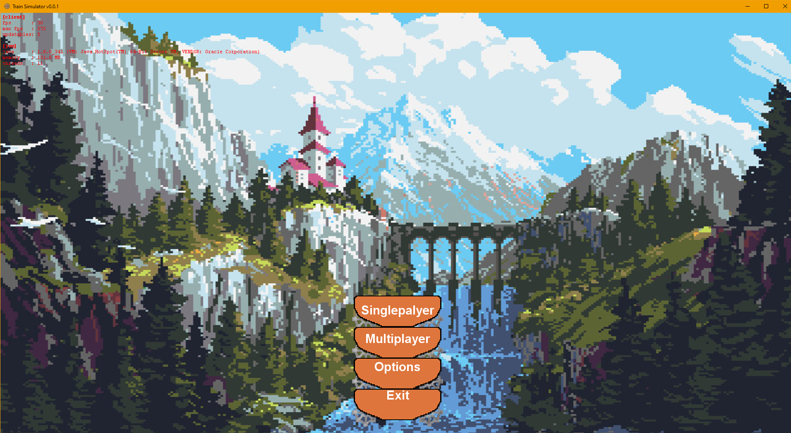
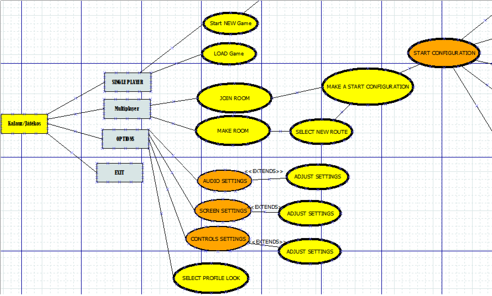

Csapatnév: Randomok
Feladat címe: Vonat menedzselős jaték
SRS html
Gyakorlatvezető::
Mileff Péter
Csoport tagok:
|
Nagy Bence |
FVIQLY |
nbence0620@gmail.com |
|
István Kaló |
T59MGG |
- |
|
Dániel Vitkolczi |
XPGMCH |
vitkolczi.daniel@gmail.com |
|
Bence Varga |
CKFEC9 |
- |
|
Petró Balázs |
FO71M2 |
petro.balazs94@gmail.com |
2022.10.25
Munkanapló táblázat
Dátum |
Verzió |
Leírás |
Szerző |
2022.10.20 |
0.1 |
Kezdeti verzió - dokumentum átnézése |
Az összes csapattag |
2022.10.22 |
0.2 |
A feladatok szétosztása |
Az összes csapattag |
2022.11.01 |
0.3 |
1.pont kitöltése |
Vízió dokumentum alapján |
2022.11.01 |
0.4 |
2. pont kitöltése |
Petró Balázs |
2022.10.26 |
0.5 |
3. pont kitöltése |
Petró Balázs |
2022.10.26 |
0.5 |
3.1. pont kitöltése |
Petró Balázs |
2022.10.26 |
0.5 |
3.2. pont kitöltése |
Petró Balázs |
2022.10.26 |
0.5 |
3.3. pont kitöltése |
Petró Balázs |
2022.10.26 |
0.5 |
3.4. pont kitöltése |
Petró Balázs |
2022.10.26 |
0.5 |
3.5. pont kitöltése |
Petró Balázs |
2022.10.26 |
0.5 |
3.6. pont kitöltése |
Petró Balázs |
2022.11.08 |
0.5 |
3.7. pont kitöltése |
Petró Balázs |
2022.11.08 |
0.5 |
3.8. pont kitöltése |
Petró Balázs |
2022.10.27 |
0.5 |
4. pont kitöltése |
Petró Balázs |
2022.10.27 |
0.6 |
4.1. pont kitöltése |
Petró Balázs |
2022.10.27 |
0.6 |
4.2. pont kitöltése |
Petró Balázs |
2022.10.27 |
0.7 |
4.3. pont kitöltése |
Petró Balázs |
2022.10.27 |
0.8 |
5. pont kitöltése |
Petró Balázs |
2022.10.27 |
0.8 |
6. pont kitöltése |
Petró Balázs |
2022.11.02 |
0.8 |
7. pont kitöltése |
Nagy Bence |
2022.11.02 |
0.8 |
8.pont kitöltése |
István Kaló |
2022.11.02 |
0.8 |
9.pont kitöltése |
Dániel Vitkolczi , István Kaló |
2022.11.02 |
0.9 |
10. pont kitöltése |
Nagy Bence , Varga Bence |
2022.11.02 |
0.9 |
11. pont kitöltése |
Dániel Vitkolczi |
2022.11.02 |
0.9 |
12. pont kitöltése |
Nagy Bence |
2022.11.02 |
0.9 |
13. pont kitöltése |
A csapat összes tagja |
2022.11.02 |
1.0 |
HTML szerkesztése |
Petró Balázs |
Tartalomjegyzék
9. On-line dokumentáció és Help rendszer
10. Felhasznált kész komponensek
Introduction

Vonatos játékunk célja, hogy menedzsmenttel teljesítsünk küldetéseket adott pályákon.
A felhasználó kedve szerint csinálhat egy vonat vállalkozást.
Overview
Termék környezete
A Játék kezdetben csak számítógépen (Windows rendszerre) fog elérhető lenni, az idő múlása alapján igényhez mérten ezt változtatjuk. Ebből adódóan Androidra illetve IOS eszközökre és később egyéb konzolokra is elérhetővé válik a vevők számára.
Elsődleges oka a Windows rendszer választása során abból adódott ,hogy vevőink közé soroljuk a kisebb életkorú felhasználókat is. Ebből származik az ,hogy a vevők/felhasználók számára olyan OS-re van szükségük ami gyakorisága miatt nagyobb valószínűséggel már a háztartásban van az otthoni számítógépeken.
Másodlagos oka az OS választásának pedig a fejlesztés során számunkra könnyebben kivitelezhető platformon a kezdeti terméket gyorsabban ki tudjuk adni az újabb/javított változatokat a vásárlóink számára.
Ugyanakkor az alkalmazás Java nyelven kerül megvalósításra menynek előnye hogy egy általános célú számítógépes programozási nyelv, amely párhuzamos, osztály-alapú, objektum-orientált A Java-alkalmazásokat általában bájtkódra fordítják , amely bármely Java virtuális gépen (JVM) futhat, függetlenül a számítógép architektúrájától.
Funkciók
A program funkcióit tekintve rendkívül szerteágazó. Az alapvető feladatain kívül (játék indítás, pontszámítás, mentések kezelése, játékon belüli hozam számítása(egyszemélyes játékokban)), többjátékos mód tulajdonságokkal is rendelkezik, mint például csevegő ablak , profil kinézetek fiókokhoz...stb.
Továbbá a játék fejlesztése során újabb kiegészítők hozzáadása is része a tervnek. Minden egyes kiegészítő tartalmat a játékos valós valutával tud majd megvenni, később vásárolni lehetlesz játékbeli legénység/vonat/utas kinézeteket , felület kinézeteket.
Felhasználók jellemzői
Az alkalmazásba való első beléptekor a felhasználónak még a felhasználói fiók létrehozása előtt természetesen el kell fogadnia az adatkezelési nyilatkozatot (Privacy Policy), amelyben részletesen fel vannak sorolva a felhasználó által megadott adatokra vonatkozó adatkezelési procedúrák, biztonsági intézkedések, illetve az adathasználatra vonatkozó célok.
A felhasználók által szolgáltatott adatok a központi adatbázisban kerülnek tárolásra, amelyhez maguknak a felhasználóknak nincsen hozzáférése.
Egyjátékos illetve Többjátékos módban elért pontszámokat és azok adatai a felhasznalók saját fiókjához van csatolva, így másik eszközről is hozzáférést biztosít a rendszer a játékosok számára.
Játékunkra nem szabtunk ki korhatárt. A játékhoz való vásárlás opciót eleinte kiegészítők megvásárlásával és azok tartalmának a fő játékhoz való hozzá illesztésével fogjuk elérni, később többet is adhat a játékos a játékélményhez különböző kinézetek megvásárlásával.
Specific Requirements

Felhasználó/Játékos: A terméknek/játéknak add elvégzendő parancsokat, ami alapján a szoftver alkamlmazkodik/végre hajtja az utasításokat. Beviteli eszközei lehetnek a különböző gomb lenyomásra billentyűzeten, illetve egér mutató gombokra húzása utáni kattintással.
Vannak adatbázisban letárolt fiókjai/mentései illetve profilja a felhasználónak. A profilt beállíthatja többjátékos módhoz.
Előfeltétel: A többjátékos mód eléréséhez internetkapcsolat létesítése kötelező ,míg a játék egyedül végig vihető részéhez nem.Fiók választás:
Vannak adatbázisban letárolt fiókjai/mentései illetve profilja a felhasználónak. A profilt beállíthatja többjátékos módhoz.
Leírás: A játék adatbázisa a felhasználó által generált fiókok segítségével végzi rajtuk a külön-külön fiókoknak a játék módosításait illetve a mentéseit a felhasználó által választott fióknak.
Felhasználó kinézetre vonatkozó beállítások kezelése:
Előfeltétel: Bejelentkezett felhasználó.
Szokásos működés: Megjeleníti a fiókokra szabott képeket amik közül a kiválasztott fiókra a felhasznaló választhat a képek közül.
Játékon belüli beállítások kezelése:
Szokásos működés: Megjeleníti a főmenű beállítások felületet. Itt a felhasznaló kénye kedve szerint beállíthatja a nehézséget , hang beállításokat...stb.
Játékmenet kezelése:
Szokásos működés: Megjeleníti a vonatot , a fogyasztását , az eltelt időt, a felugró ablakokat(beleértve a Vereség és a Győzelem ablakot).
Menet indításkor Objektívumok/célok meghatározása ,elérési útvonalak megadása, útvonalak választásának kezelése:
Szokásos működés: Megjeleníti a vonat felkészítése felületet és kiválasztott beállítások alapján indítja a menetet.
Popup riasztások/Ingame döntési ablakok:
Szokásos működés: Megjelenít játékmenet közben amíg a vonat az útvonalon halad egy 4 opcióval/gombbal ellátott ablakot, valamint
egy ábrát és egy leírást ami felhívja a játékos figyelmét az éppen történő eseményre. Az opciók közül attól függően ,hogy mennyire felszerelt a játékos vonata van engedélyezve a gombok lenyomása/választása bizonyos opciókból amik a felugró ablakkal jöttek.
Bolt felület:
Szokásos működés: A vonat sikeres menete után megkapja a bérét a játékos. Ezt a boltban használhatja fel ,hogy felszerelje masináját és vegyen személyzetet a következő indulás előtt. Ezáltal egyes opciók a felugró ablakoknál elérhetővé vállik.
Felhasználó megjelenítése:
Előfeltétel: A főmenűben kiválasztott profil után , beállítások gomb lenyomása után , belül a profil szerkesztése menű pont gomb lenyomása
Szokásos működés: Profil képek kinézetének váltogatása a bal gomb , illetve jobb gombra kattintással. A kiválasztott kép után a változtatások mentése gombbal rögzíteni a kívánt kinézetet.
Leírás: Nehézségi fokozat váltás
Szokásos működés: Középen egy textbox amiben egy nehézségi szint neve és alatta egy textbox ami leírja ,hogy mit várjon a felhasználó a szinttől. Ugyanakkor ballra és jobbra egy-egy gomb ami a nehézségi szint váltást engedélyezi a felhasználó számára. Ugyanakkor egy vissza a menűbe gomb és egy beállítások mentése gomb.
Leírás:Hang beállítások átállítása
Szokásos működés:Középen több sorban elhelyezkedve egy textbox, amiben a hangerő szintet ábrázoló százalék helyezkedik el, és alatta egy textbox ami leírja ,hogy mit várjon a felhasználó a hang opciótól (főhangerő,hang effektek hangereje, utasítások/legénység hangereje, főmenű zene hangereje, játék menet közbeni zene hangereje, gombok lenyomása /interface kezelő hangok hangereje). Ugyanakkor ballra és jobbra egy-egy gomb ami a hangerő szint váltást engedélyezi a felhasználó számára , ugyanúgy minden hangopcióhoz soronként. Ugyanakkor egy vissza a menűbe gomb és egy beállítások mentése gomb.
Alternatív eset: Ha a beállítást nem változtatja meg akkor az elmentett vagy a default értékek fognak maradni a hangbeállításoknál.
Leírás: Kép méret beállítása:
Szokásos működés:az ablak nagyságát tudja a játékos változtatni, választhat ablakos illetve full screen módok közül is.
Játék indítása/ Játék állás betöltése
Előfeltétel: Csak bejelentkezett fiók számára érhető el.
Leírás: A Játékos a vonatot elindítja az állomásról a billentyűzeten megadott gombokkal illetve lehet a felületen is neki kattintással növelni illetve csökkenteni a sebességet. Egérrel választ opciókat a felugró ablakokban, illetve hozz döntéseket: Lehet ez útvonal választás , újratöltése a vonatnak állomáson , utasok felvétele, veszély vagy akadály megoldása.
Vereség (Ami vagy üzemeanyag kifogyásakor vagy a vonat túl sokat sérült esetkor fordul elő) esetén a 3 opció közül választhat egér kattintással : Újra próbálás elejéről,Újra próbálás mentéstől, Kilépés Főmenübe. A(z) "Újra próbálás elejéről" opció választással a felhasználó betölti ugyanazt a kezdő állomást , ahonnan indult a vonatja az általa előkészített legénység, rakomány, illetve utasok és egyebekkel.A(z) "Újra próbálás mentéstől" opció választással a felhasználó betölti ugyanazt a mentés, ahonnan indult a vonatja a meglévő legénység, rakomány, illetve utasok és egyebekkel. A Főmenűbe lépés gombbal vissza kerül a főmenűbe.
Győzelem esetén előjön a sikeres útvonalhoz kötött jussának kiszámítása szöveg és a "Bolthoz" gomb. Majd ha ott végzett a következő útvonal kiválasztása jöhet a felhasználó számára.
Szokásos működés: Beállítások alapján megadott billentyűzeten leadott gomb nyomására indul a vonat az állomásáról el. Ezt ha a felhasználó nem adja meg Default módon jobbra nyíl. A jobbra illetve ballra nyíl segítségével a játékos növeli illetve csökkenti a vonat sebességét , ha a vonat sebességét eléggé csökkenti akkor a vonat megáll . Egér kattintással lehet a játékmenet közben felugró ablakokon opció gombra kattintva tovább haladni. Egér kattintással az útvonalak közül lehet választani a kijelölt útvonalra kattintva. A vereség illetve ,győzelem gombjait/opcióit is egér kattintással lehet kezelni.
Vonat beállítások:
Leírás: Megjeleníti a vonat adatait és lehetőséget ad a szerkesztésükre.
Szokásos működés: Vonat kinézet választás gombok ballra illetve jobbra a kinézetek közti lapozás. Legénység beállítása: ha van többféle akkor a legénység sávon a gombok bekapcsolása amit használni fog a felhasználó. Üzemanyag feltöltése a vonat számára gomb benyomása. Kívánt mennyiségű utasok számát megadni a neki kínált textboxban, majd lenyomni a rögzítés gombot. Kezdeti útvonalat a térkép segítségével megadni , ugyanakkor cél állomást is megadni.
Leírás: Megadott időközönként a vonat az idő mérés, a vonat fogyasztása megáll és felugrik egy ablak több választható opcióval és egy ábrával ellátott leírással. Az opciók közül választ a felhasználó az egérrel való kattintással.
Szokásos működés: Felugrott ablak textboxában tartalom , tőle jobbra vagy ballra az ábra elhelyezkedése és a szöveg alatt a lehetőségek opciói/gombjai jönnek elő. Gombok egérrel való rákattintásával a játék az alapján folytatódik , a vonat ismét megy a megállítása előtti sebességgel , az idő is és a vonat fogyasztása is folytatódik .
Leírás: Vizuálisan jeleníti meg a Bolt felületet ahol ábrákkal és leírásokkal mutatja a felhasználó számára a vásárolható opciókat. Ezeket az opciókat a kosárba rakk gombbal a termékek alatt lehet felhalmozni , amit egy jobb oldalon lévő textbox nyilvántart. Van emellett egy vásárlási lista törlése gomb ami előlről indítja a termékek felhalmozását. Majd a végén egy gomb amely segítségével a listán szereplő vásárlandó dolgokat a játékos meg is veszi. Ugyanakkor vissza a főmenűbe gomb is megjelenik itt is.
Szokásos működés: Gombokra való kattintás segítségével a kijelölt árucikkek vásárlása, listába rakása. Ha a játékos hibázott a vásárlásban , akkor a listát törölheti a lista törlés gombra kattintva. Majd a lista megvásárlása gombra kattintás után a bolt felület elhagyása és a vásárolt összeg levonása a termékek hozzáadásával a vonathoz.
Leírás:Pályák mint Gomb
Ez a része a játéknak ugyanúgy Egyszemélyes és Többjátékos játékmódban is elérhető. Vizuálisan jeleníti meg a Pálya választó felületet ahol ábrákkal és leírásokkal mutatja a felhasználó számára a választható opciókat(Kezdetben 16 pálya lesz elérhető és ugyanúgy 16 lesz feloldható). A pályák változatossága: Télies(USA,Észak Európai),Sivatagi(Mexico),Vadnyugati(USA,Mexico),"Európai"(Dél,Közép,Nyugat Európai) színterek. Ezeket az opciókat az Egyszemélyes játék során feloldhatja (minden alap pálya végigjátszása győzelem eredménnyel eredményezzi az összes feloldását)
Leírás:Pályák mint játékbeli egység
Szokásos működés:Egy pálya a nehézségi szinttől függően tartalmazhat akadályokat:
könnyű = 6-8 esemény felugró ablak
közepes = 8-9 esemény felugró ablak
nehéz = 9-10 esemény felugró ablak
veterán = 10-12 esemény felugró ablak
Még a végállomás előtt lesznek feltöltő állomások:
Ezeken a helyeken a szén raktár teljesen feltöltődik. Az utasok száma változik a fel és leszállók számával ezáltal plusz jövedelem pontokat kap a játékos a végállomásra érve.
Ugyanakkor a játékos időt is tölthet itt ,hogy javítsa az út közben jött károk okozta sérüléseket a vonaton. 1 javítás az eddig elszenvedett sérüléseket javítja , minnél több annál drágább. Maximum 3 sérülése lehet a vonatnak , ha ennél több akkor Game Over-t kap a játékos. Ugyanakkor az útközben üzemanyag kifogyásakor is előjön a Game Over.
A játékos egy végállomásig ment menet után kap fizetést:
Ebben a fizetésben benne van a károk kelletkezte javítások ára , utasok kárpótlása, hírességektől kapott jutalom, vesztegelt idő, felhasznált szén és nehézségi szintnek megfelelő újabb tételek.
Usability
A termék egyszerű otthoni felhasználásra, magánszemélyeknek készül. Fontos szempont a könnyű hozzáférhetőség mellett az egyszerű használhatóság. A játék jól áttekinthető és könnyen kezelhető.
Egy egyszerű és felhasználóbarát játékról van szó, nincsenek haladó számítógépes tudást igénylő elemek. A funkciók, mint a vonat irányítása vagy a Bolt felület, magától értetődőek és rögtön rendelkezésre állnak a kezdő felhasználók számára is. Ami időt vehet igénybe, az a vonatok felszerelése és ezáltal a felugró ablakok lehető legjobb opciójainak feloldása felhasználó számára. Azonban ezek sem bonyolultak és nem igénylenek sok időt.
Alkalmazásunk sebessége és dinamikus felépítése más meglévő
rendszerekhez viszonyítva jelentősen gyorsabb. Ez köszönhető a jól megírt
programkódnak, valamint annak, hogy a legfejlettebb technológiákat használja.
A szolgáltatás felhasználói szempontból is gyors és hatékony.
Otthoni számítógépeken a szolgáltatás lényegesebben könnyebben és gyorsabban használható az adott platformra készült kliensprogrammal.
A játék megismeréséhez a kezdő felhasználóknak segítséget nyújthathat majd a játékkal együtt kapott felhasználói útmutató/tutorial, benne egy részletes "Gyakran Ismételt Kérdések" szekcióval. A vonat beállítások illetve a játék beállításai(hang,nehézség,felbontás,grafika) oldalakon minden opcióhoz részletes leírás tartozik, így a beállítással sem lesz gondja a kezdő felhasználónak.
Bár a funkciók magától értetődőek és lesz egy útmutató is, ha mégis gondja akadna egy felhasználónak, akkor egy menüponton vagy e-mailben elérheti a játék üzemeltetőit vagy fejlesztőit, hogy segítséget kérjen.
Reliability
A játék teljesítménye függ a kiszolgált felhasználó hardverjétől. A szolgáltatásból befolyó pénzen is múlik, hogy milyen korszerű felszerelésre tudjuk a terméket telepíteni.
Az adatbázison bizonyos időközönként karbantartási munkálatokat végzünk, emellett a külső forrásokból érkező adatokat is ellenőrizni kell időről időre esetleges integritási hibákat elkerülendő. Az online szerverek adatbázisa az éjféli órákban frissül automatikusan, amikor az oldal terhelése is jóval kisebb. A rendszer hibáit a fejlesztők és karbantartók javítják működési naplók és felhasználói visszajelzések alapján.
Karbantartási munkálatok során a szolgáltatás minél nagyobb részét próbáljuk stabilan tartani, esetleges backup rendszerekre való átirányítással. A meghibásodásokat 24 órán belül javítani kell a játék szerverek zökkenőmentes használata érdekében. Az adatbázisról egy naprakész backup tárolódik és az esetleges hardveres meghibásodások esetén minimális adatvesztéssel lehet helyreállítani a szolgáltatást.
A rendszer stabilitásáért és a gyors válaszidő eléréséért különböző segédprogramokat alkalmazunk a kód komplexitásának csökkentésére.
A felhasználók fiókjainak és hozzájuk tartozó személyes
adatoknak védelméről biztonsági eljárásokkal gondoskodunk.
Performance
Train Tycoon 2022 használatához szükséges gépigény
Train Tycoon 2022 Ajánlott gépigény
Supportability
A használandó kódolási szabványok, elnevezési konvenciók:
Használt szabványok: Don't reapeat yourself, Create Read Update Delete, elnevezési konvenció:
Osztály neve nagybetűs, az interface mindig publikus, az osztálypéldány kisbetűs,
paraméter neve előtt legyen alulvonás.
Csak a karbantartóknak, illetve üzemeltetőknek szükséges funkciók:
Időnullázó a pályán. Megadott mennyiségű játékbeli valuta hozzáadása. Felszerelés hozzáadása teszteléshez.
A működés során keletkező naplók (a későbbi hibakeresés vagy finomhangolás elősegítésére):
Tesztkörök lefutási idejének rögzítése egy log fájlban.
Játékbeli valuta költségstatisztika mérése logfájlban, statisztikához tartozó algoritmusprogramok.
Végeredmények mentése egy másik fájlban.
A karbantartók munkáját segítő segédalkalmazások (például a naplók kiértékelésére):
Számológép, mysequel, python nyelven írt adatbáziskezelők, előre legyártott csapat által írt programok.
Az alacsony költségvetésre való törekvés végett a tervezési fázis során próbálunk minél kisebb teljesítményű hardver erőforrásokkal dolgozni, és ezeken tesztelni. És ehhez mérten a későbbiekben az erőforrások növelhetőek, növelve ezzel akár a feldolgozási, akár a reagálási sebességet. Egy manapság átlagosnak mondható 2 magos processzorral rendelkező számítógép, és 4GB-nyi rendszermemória, valamint egy 500GB méretű merevlemez elegendő lesz a tesztelési fázisban.
A JAVA környezetben íródó szoftver miatt fontos egy Unix operációs rendszer(vagy Windows alatt NetBeans Java fejlesztő program)
És az előző pont miatt szüksége még egy JAVA kódot futtatni képes Java Virtual Machine
Az adatbázisok kezeléséhez a MySQL program
Ezen komponensek nélkül a szoftverrel szemben támasztott követelmények nem jöhetnének létre, tehát ezek mindenképpen kellenek a megfelelő működéshez.
A munka során fontos tehát számunkra hogy a megfelelő szoftverek a rendelkezésünkre álljanak:
• Microsoft Office vagy Open Office csomag
• Java fejlesztői környezet
• webböngésző
• MySQL program
Fejlesztési módszertanunk 2 fő csoportból áll:
1. az első ciklus az ötlet kipattanásától az átadásig tart
Online User Documentation and Help System Requirements
A szoftverhez mindenképpen ajánlott egy dokumentáció készítése a könnyebb elsajátíthatóság érdekében. Ezt a termék mellé megkapja a felhasználó. Azonban szükséges lehet egy on-line dokumentáció is arra az esetre ha a termékhez mellékelt utasítás elveszne.
A programot a felhasználói visszajelzések hatására folyamatosan fejleszteni fogjuk, és az esetleges módosításokat is on-line lehetne elolvasni, illetve onnan letölteni.
A program tehát folyamatosan frissülni fog, ezért a dokumentációnak is vele együtt kell frissülni, erre ügyelni kell, hogy ne legyen különbség a kettő között. A program licenszét a felhasználónak elég természetesen egyszer megvásárolnia, és a folyamatos frissítés teljes mértékben ingyenes lesz számára a jövőben.
A szoftver végleges változatában tartalmazni fog egy mindenre kiterjedő segítő rendszert,
ami folyamatosan segítő üzeneteket fog a felhasználónak küldeni.
Ez nyilván a beállításokban ki-bekapcsolható lesz.
Ezt a játékban egy folyamatosan frissülő véletlenszerű rendszer fogja csinálni.
Lesz még egy a teljes játékmenetet lefedő kiképzőpálya, amelyet a felhasználó bármikor újraindíthat.
Ehhez meg kell csinálni egy pályát, és helyzetet, amiben meg lehet mutatni a felhasználónak mindent.
Ezeken felül lesz még egy kapcsolódó fórum, ahol a játékosok véleményt írhatnak, hibát jelenthetnek,
vagy akár a játékkal/játékmenettel kapcsolatban kérdezhetnek. Erre azért lenne szükség, mert így akár a játékosok egymást is tudni fogják segíteni.
Ezt a külön felületet, majd könnyen elérhetőnek kell lennie a játékból.
Ezt a fórumot nyilván a játékon felül még külön létre kell hozni, mint ahogy egy külön adattárólót is,
amely majd a fórumot kezeli.
Vásárolt ezközök:
Microsoft Azure
A Microsoft Azure(korábban Windows Azure, még korábban Windows Cloud) a Microsoft cloud computing platformja és infrastruktúrája, melynek segítségével alkalmazásokat lehet készíteni, telepíteni és futtatni a Microsoft által felügyelt adatközpontokon.
A korábbiakban a „Cloud” (magyarul felhő) név az úgynevezett „cloud computing” (vagyis számítási felhő) kifejezésre utal, melynek lényege, hogy az egyes alkalmazások nem a helyi munkaállomáson, hanem egy internetes szolgáltatás keretein belül valamilyen távoli kiszolgálón futnak. A fejlesztők a platformra gyakorlatilag tetszőleges, a Visual Studio környezet által támogatott .NET-alapú nyelven elkészíthetik alkalmazásaikat, amelyek feltöltéséhez, menedzseléséhez és frissítéséhez szintén magas szintű, könnyen kezelhető eszközöket biztosít az Azure. Az Azure segítségével eltudjuk menteni biztonságosan a játék állapotát. 1000GB tárolására elegendő hely 80 000 forint / hónap.
Előnyök:
Adobe Photoshop Express / after effect
A videojáték alkotások, pályák, vonatok, valamint a felhasználói felület elkészítéséhez használtuk az alábbi programokat. Egyszerű és élethű effektekben gazdag grafikákat valósítunk meg vele. A programok használata egyszerű, illetve rengeteg alap effect megtalálható bennük. Felhasználási feltételei miatt az Adobe photoshop illetve az after effect havi 15.000 forint költséget von maga után.
Cubase:
Ez a program legfőképp a zeneiparban ismert, Mivel magas minőségű zenéket, illetve hangokat, hangeffektusokat lehet vele előállítani. A játékunkban lévő hangeffekteket, illetve a fő menű zenéjét ebben a programban állítottuk elő. A program használatához szükséges felhasználói licenszét megvásároltuk, ami megközelítőleg 50ezer forintot vont magával.
Előnyök:
Eclipse/InteliJ:
Mind az Eclipeset mind az InteliJ azért került választásra, mert a videójáték Java programozási nyelven íródott, illetve részekre tudtuk osztani a program fejleszését, amit a végső fázisban össze tudtunk fűzni. Eme két programban játék programozóinknak, illetve fejlesztőinknek nagy tapasztalat fűződik hozzá, akik a játékot is ebbe implementálják. Az alábbi szoftverek ingyenesek.
Valamint Az Eclipse a legjobb választás fejlesztőeszközei miatt. Az Eclipse kínálja az Eclipse Marketplace-t, amely számos letölthető beépülő modult tartalmaz , valamint egy bővítményfejlesztő környezetet, amely lehetővé teszi a fejlesztők számára, hogy saját szolgáltatásokat hozzanak létre.
Az Eclipse több mint 100 programozási nyelvet támogat , robusztus modellező-, diagram- és tesztelőeszköz -készlettel rendelkezik . Az Eclipse támogatja a népszerű Java építőeszközöket, a Maven-t és a Gradle-t is .
Előnyök:
Notepad++:
A programot a HTML dokumentálció elkészítésére használtuk. A szoftver egyszerű használatot biztosít, mely nagyban megkönnyíti a kódolást. A szoftverhez külön licensz megvásárlása nem szükséges, mivel ingyenes, de csak a használatához kaptunk engedélyt bármilyen mást a használaton kívül a licensz tilt.
Előnyök:
Ubisoft
Az Ubisoft a játékosok körében az egyik legnépszerűbb platfom, melynek a menü rendszere egyszerű és biztonságos. A Ubisoft biztosítja a barátokkal való játékélményt. A Ubisoft előírja a szerződést egy bankkal, melyben megvan határozva a tranzakciókra vonatkozó szabályok, illetve adók. Ezek után a játék egy rövid tesztelésen megy keresztül a Ubisoft csapata által. Csak ezek után lehet nyilvánossá tenni a játékot. A játék ingyenesen fog megjelenni azonban játékon belüli vásárlásokat fog tartalmazni, amellyel gyorsabban lehet majd fejleszteni a vonatokat.
Liti játékszerkesztő:
A Liti játékszerkesztő több komponenst is felajánl a szerkesztő:
Interfaces
User Interfaces
A játék a felhasználói interfészen keresztül fogja tudni megkapni a szükséges utasításokat. Éppen ezért a játékunkban egy minnél jobban átlátható, letisztult, és a lehető legminimalisztikusabb interfészt akarunk implementálni.
A játék elindítása után azonnal a főmenüben fogja találni magát, esetleg egy töltőképernyő előzheti meg. Ha lesz akkor színes képek lesznek a hátterei a játékból, az előtérben meg hasznos tippek, és a betölttöség mértéke fog látszódni.
A menü négy különböző gombból fog állni: Singleplayer, Multipalyer, Options, Exit.
A singleplayer gomb egy almenüre mutat, ahol a játékos kiválaszthatja, hogy folytatni akar egy mentést, vagy új játékot akar kezdeni. A multipalyer gomb egy lobby-ba fog vezetni ahol a felhasználók egymásra fognak majd tudni kapcsolódni, illetve a közös játékot is itt lehet majd beállítani. Az options menü a beállítások almenübe fog vezetni. Az exit gomb a játékból való kilépést teszi lehetővé.
A játékban még lesz külön egy felület, ahol a játékos a legfontosabb információkat fogja látni (idő, út hossza, meg tett út hossza, pénz, üzemanyag, üzemanyagfelhasználás) - ezek álllandóan látszódni fognak, illetve egyéb füleket amik az előbbiekről részeletesebb információt fognak szolgálni. Valamint egy térkép is implementálva lesz, ahol még egyéb infomációkat kaphat a játékos.
Lesz még egy fejlesztői környezet, ami a játék kész verziójába nem fog belekerülni. Ez csak a fejlesztők számára elérhető, és egyáltalán hasznos eszközöket fog tartalmazni (például idő és/vagy erőforrásmanipulálása mind két irányban).
Communications Interfaces
A játék játszható lesz egérrel, és billentyűzettel, továbbá egy kontrolleres irányításnak az implementációja is tervben van. Esetleg még egy telefonos irányítás is lehetséges, de annak teljesen eltérő lesz a kezelő felületet.
A játék elérhető lesz teljes képernyő módban, illetve ablakos módban is. Felbontás kiválasztása csak teljes képernyőben lesz elrhető, egyébként magától fog skákázódni.
Applicable Standards
Valamilyen szintű előírás miatt. (Például törvényi előírás stb.)
Mandatory Standards
A szabványok egy része TCP, mások UDP fölött működnek, és alapvetően 3 csoportba sorolhatók:
Optional Standars
A fejlesztők vagy a felhasználók által valamilyen okból önként vállalt előírások.
A H.324-es szabvány
Szintén a közelmúltban került elfogadásra a H.324 szabvány, amely az
analóg telefonvonalon történô videokonferenciázás szabályait határozza
meg. Az analóg telefonvonal nyújtotta viszonylag kis sávszélesség miatt
az analóg vonalon működô rendszerek elsôsorban nem a professzionális
felhasználást célozzák meg, hanem az olcsó, akár otthoni
videokonferenciázási lehetôséget nyújtanak.
A H.310-es szabvány
Jelenleg is folyik a munka a H.310 szabvány kidolgozására, amely az ATM
alapú videokonferenciázást hivatott definiálni.
A dokumentáció megtalálható:
github.com/Feekyy/Randomok---Szoftech